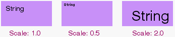

General and Miscellaneous
LineCapMode() see SetLineMode()
LineJoinMode() see SetLineMode()
LineMiterLimit() see SetLineMode()
PushState() , PopState()
|
Saves and restores the state from the state stack. A state consists of the following: local and global origins, local and global scales, drawing mode, line cap and join modes, miter limit, pen size and location, foreground and background color, stipple pattern, local and global clipping regions, and the font context. When a state is saved to the stack, a new state context is created, with a local scale of zero, a local origin at (0,0), and no clipping region.
|

SetLineMode() , LineJoinMode() , LineCapMode() , LineMiterLimit()
|
These methods implement support for PostScript-style line cap and join modes. The cap mode determines the shape of the endpoints of stroked paths, while the join mode determines the shape of the corners of the paths (i.e. where two lines meet).
The following values of cap_mode are defined:
Additionally, the following values of join_mode are defined:
| B_ROUND_JOI N | Acts identically to B_ROUND_CAP, except applied to joins. |
| B_MITER_JOIN | The lines are extended until they touch. If they meet at an angle greater than 2*arcsin(1/miterLimit), a bevel join is used instead. |
| B_BEVEL_JOIN | Butt end caps are used at the common endpoint and the empty area between the caps is filled with a triangle. |
| B_BUTT_JOIN | Acts identically to B_BUTT_CAP, except applied to joins. |
| B_SQUARE_JO IN | Acts identically to B_SQUARE_CAP, except applied to joins. |
SetLineMode() sets the line and join modes and the miter limit while LineCapMode(), LineJoinMode(), and LineMiterLimit() return them. The line mode affects all of the Stroke... methods except for Arc, Ellipse, and RoundRect.
SetScale()
|
Scales the coordinate system the view uses for drawing. The default scale is 1.0; smaller ratio values reduce the size of the drawing coordinate system; larger numbers magnify the system. For example, a ratio of 0.5 makes a subsequent drawing twice as small and moves the drawing closer to the origin, and 2.0 makes it twice as big and moves it away, as shown below.

The scaling ratio only affects subsequent drawing operations! Changing the scale doesn't affect the graphics already displayed in the view, the view's frame rectangle and clipping region, the placement and size of subviews, translation of mouse coordinates to and from view space, and so forth.
Multiple SetScale() calls don't compound within the same graphics state, but they do compound across pushed states:
aview->SetScale(0.5); aview->SetScale(0.5); /* aview's scaling is 0.5. */ bview->SetScale(0.5); bview->PushState(); bview->SetScale(0.5); /* view's scaling is 0.25. */
|
Pen Functions
MovePenBy() , MovePenTo() , PenLocation()
|
These functions move the pen (without drawing a line) and report the current pen location.
MovePenBy() moves the pen horizontal coordinate units to the right and vertical units downward. If horizontal or vertical are negative, the pen moves in the opposite direction. MovePenTo() moves the pen to point—or to (x, y)—in the BView's coordinate system.
Some drawing functions also move the pen—to the end of whatever they draw. In particular, this is true of StrokeLine(), DrawString(), and DrawChar(). Functions that stroke a closed shape (such as StrokeEllipse()) don't move the pen.
The pen location is a parameter of the BView's graphics environment, which is maintained by both the Application Server and the BView. If the BView doesn't belong to a window, MovePenTo() and MovePenBy() cache the location, so that later, when the BView becomes attached to a window, it can be handed to the server to become the operable pen location for the BView. If the BView belongs to a window, these functions alter both the server parameter and the client-side cache.
PenLocation() returns the point where the pen is currently positioned in the BView's coordinate system. Because of the cache, this shouldn't entail contacting the server. The default pen position is (0.0, 0.0).
See also: SetPenSize()
SetPenSize() , PenSize()
|
SetPenSize() sets the size of the BView's pen—the graphics parameter that determines the thickness of stroked lines—and PenSize() returns the current pen size. The pen size is stated in coordinate units, but is translated to a device-specific number of pixels for each output device.
The pen tip can be thought of as a brush that's centered on the line path and held perpendicular to it. If the brush is broader than one pixel, it paints roughly the same number of pixels on both sides of the path.
The default pen size is 1.0 coordinate unit. It can be set to any nonnegative value, including 0.0. If set to 0.0, the size is translated to one pixel for all devices. This guarantees that it will always draw the thinnest possible line no matter what the resolution of the device.
Thus, lines drawn with pen sizes of 1.0 and 0.0 will look alike on the screen (one pixel thick), but the line drawn with a pen size of 1.0 will be 1/72 of an inch thick when printed, however many printer pixels that takes, while the line drawn with a 0.0 pen size will be just one pixel thick.
The pen size is a parameter of the BView's graphics environment maintained by the Application Server and cached by the BView. If the BView isn't attached to a window, SetPenSize() records the size so that later, when the BView is added to a window and becomes known to the server, the cached value can automatically be established as the operable pen size for the BView. If the BView belongs to a window, this function changes both the server and the cache.
See also: "The Pen" in the "Drawing" section of this chapter, StrokeArc(), MovePenBy()
Color
SetHighColor() , HighColor() , SetLowColor() , LowColor()
|
These functions set and return the current high and low colors of the BView. These colors combine to form a pattern that's passed as an argument to the Stroke...() and Fill...() drawing functions. The B_SOLID_HIGH pattern is the high color alone, and B_SOLID_LOW is the low color alone.
The default high color is black—red, green, and blue values all equal to 0. The default low color is white—red, green, and blue values all equal to 255.
The inline versions of SetHighColor() and SetLowColor() take separate arguments for the red, blue, and green color components; they work by creating an rgb_color data structure and passing it to the corresponding function that's declared virtual. Therefore, if you want to override either function, you should override the virtual version. (However, due to the peculiarities of C++, overriding any version of an overloaded function hides all versions of the function. For continued access to the nonvirtual version without explicitly specifying the "BView::" prefix, simply copy the inline code from interface/View.h into the derived class.)
The high and low colors are parameters of the BView's graphics environment, which is kept in the BView's shadow counterpart in the Application Server and cached in the BView. If the BView isn't attached to a window, SetHighColor() and SetLowColor() cache the color value so that later, when the BView is placed in a window and becomes known to the server, the cached value can automatically be registered as the current high or low color for the view. If the BView belongs to a window, these functions alter both the client-side and the server-side values.
HighColor() and LowColor() return the BView's current high and low colors. Because of the cache, this shouldn't entail contacting the Application Server.
See also: "Patterns" in the "Drawing" section of this chapter, SetViewColor()
SetViewColor() , ViewColor()
|
These functions set and return the view's background color. This is the color that's displayed when a view is erased during an update, or when the view is resized to expose new areas. The default view color is white (255,255,255). If you don't want the view to be erased in an update, set the view color to B_TRANSPARENT_COLOR. (Despite the name this doesn't actually make the view transparent.)
The inline version of SetViewColor() calls the virtual version. Thus, overriding the virtual version affects both versions. However, due to the peculiarities of C++, overriding any version of an overloaded function hides all versions of the function. To fix this, simply copy the inline code from View.h into your subclass.
ViewColor() returns the current background color.
See also: "The View Color" in the "Drawing" section of this chapter, SetHighColor(), SetViewBitmap()
Drawing Modes
DrawingMode() see SetDrawingMode()
SetBlendingMode() , GetBlendingMode()
|
These two functions set and retrieve the graphics state variables which control the details of alpha transparency drawing. These variables will have an effect on drawing in the view only if the drawing mode has been set to B_OP_ALPHA by SetDrawingMode().
alphaSrcMode is one of the following two constants, with associated meanings:
- B_CONSTANT_ALPHA : Use the alpha channel of the current high color as the transparency value for whatever is being drawn.
- B_PIXEL_ALPHA : When drawing a bitmap, use the alpha value associated with each pixel as the transparency value for that pixel. This can be used to obtain some interesting variable transparency effects.
alphaFncMode is one of the following two constants, with associated meanings:
- B_ALPHA_OVERLAY : The "normal" mode, used when drawing a transparent image or shape over an opaque background.
- B_ALPHA_COMPOSITE : Used when blending two or more transparent images together offscreen, to produce a new transparent image that will later be drawn onscreen using the B_ALPHA_OVERLAY setting.
You can find a full tutorial on alpha drawing at the top level of The Interface Kit documentation.
SetDrawingMode() , DrawingMode()
|
These functions set and return the BView's drawing mode, which can be any of the following eleven constants:
| B_OP_COPY | B_OP_MIN |
| B_OP_OVER | B_OP_MAX |
| B_OP_ERASE | B_OP_ADD |
| B_OP_INVERT | B_OP_SUBTRACT |
| B_OP_SELECT | B_OP_BLEND |
| B_OP_ALPHA |
The drawing mode is an element of the BView's graphics environment, which both the Application Server and the BView keep track of. If the BView isn't attached to a window, SetDrawingMode() caches the mode. When the BView is placed in a window and becomes known to the server, the cached value is automatically set as the current drawing mode. If the BView belongs to a window, SetDrawingMode() makes the change in both the server and the cache.
DrawingMode() returns the current mode. Because of the cache, this generally doesn't entail a trip to the server.
The default drawing mode is B_OP_COPY. It and the other modes are explained under "Drawing Modes" in the "Drawing" section of this chapter.
Text Functions
The functions below relate specifically to using text in BView objects.
ForceFontAliasing()
|
ForceFontAliasing() is used in conjunction with printing. When called with a value of true, if causes subsequent printing to be done without antialiasing printed characters. This is normally what is desired with high-resolution printers, to guarantee that the edges of printed characters appear sharp. Calling ForceFontAliasing() with an argument of false turns antialiasing back on, which may be desirable with lower-resolution printers.
Note that ForceFontAliasing() does not affect characters or strings drawn to the screen.
See also: The BPrintJob class.
GetFont() see SetFont()
GetFontHeight()
|
Gets the height of the BView's font. This function provides the same information as BFont's GetHeight(). The following code
font_height height; myView->GetFontHeight(&height);
is equivalent to:
font_height height; BFont font; myView->GetFont(&font); font.GetHeight(&height);
See the BFont class for more information.
See also: BFont::GetHeight()
GetStringWidths() see StringWidth()
SetFont() , GetFont()
|
SetFont() sets the BView's current font so that it matches the specified properties of the font BFont object. The properties mask is formed by combining the following constants:
| B_FONT_FAMILY_AND_STYLE | B_FONT_SPACING |
| B_FONT_SIZE | B_FONT_ENCODING |
| B_FONT_SHEAR | B_FONT_FACE |
| B_FONT_ROTATION | B_FONT_FLAGS |
Each constant corresponds to a settable property of the BFont object. The default mask, B_FONT_ALL, is a shorthand for all the properties (including any that might be added in future releases). If the mask is 0, SetFont() won't set the BView's font.
GetFont() copies the BView's current font to the BFont object passed as an argument. Modifying this copy doesn't modify the BView's font; it takes an explicit SetFont() call to affect the BView.
For example, this code changes the size of a BView's font and turns antialiasing off:
BFont font; myView->GetFont(&font); font.SetSize(67.0); font.SetFlags(B_DISABLE_ANTIALIASING); myView->SetFont(&font, B_FONT_SIZE | B_FONT_FLAGS);
Since the BFont object that this example code alters is a copy of the BView's current font, it's not strictly necessary to name the properties that are different when calling SetFont(). However, it's more efficient and better practice to do so.
The font is part of the BView's graphic environment. Like other elements in the environment, it can be set whether or not the BView is attached to the window. Graphics parameters are kept by the Application Server and also cached by the BView object.
See also: the BFont class, get_font_family()
SetFontSize()
|
Sets the size of the BView's font to points. This function is a shorthand for a SetFont() call that just alters the font size. For example, this line of code
myView->SetFontSize(12.5);
does the same thing as:
BFont font; font.SetSize(12.5); myView->SetFont(&font, B_FONT_SIZE);
See also: the BFont class, SetFont()
StringWidth() , GetStringWidths()
|
These functions measure how much room is required to draw a string, or a group of strings, in the BView's current font. They're equivalent to the identically named set of functions defined in the BFont class, except that they assume the BView's font. For example, this line of code
float width;
width = myView->StringWidth("Be"B_UTF8_REGISTERED);
produces the same result as:
float width;
BFont font;
myView->GetFont(&font);
width = font.StringWidth("Be"B_UTF8_REGISTERED);
See the BFont class for details.
See also: BFont::StringWidth(), BFont::GetEscapements()
TruncateString()
|
Truncates the BString inOutString to be no wider than width pixels. The mode flags control how the string is truncated.
B_TRUNCATE_BEGINNING
Cut from the beginning of the string until it fits within the specified width.
B_TRUNCATE_MIDDLE
Cut from the middle of the string.
B_TRUNCATE_END
Cut from the end of the string.
B_TRUNCATE_SMART
Cut anywhere, but do so intelligently, so that all the strings remain different after being cut. For example, if a set of similar path names are passed in the inputStringArray, this mode would attempt to cut from the identical parts of the path names and preserve the parts that are different. This mode also pays attention to word boundaries, separators, punctuation, and the like. However, it's not implemented for the current release.
Clipping Functions
ClipToPicture() , ClipToInversePicture()
|
Modifies the view's clipping region by intersecting the current clipping region with the pixels drawn by picture (in the case of ClipToPicture) or with everything outside the pixels drawn by picture (in the case of ClipToInversePicture), to produce the new clipping region.
Note that BPicture instances are, by their nature, resolution independent; when the ClipToPicture or ClipToInversePicture command is invoked, picture is effectively drawn at the same resolution as the invoking view, and the bitmap produced by that action is used to modify the clipping region. You may think of picture as executing its drawing instructions on a surface that starts out as completely transparent; at the end of the process, each pixel on the drawing surface will either be either completely transparent, or will be at least somewhat opaque. The pixels which are at least somewhat opaque are those which were "drawn" by picture.
If sync is false, the functions will execute asynchronously; normally they execute synchronously (i.e. wait for the drawing actions to be completed by the Application Server.)
See also: BPicture, BeginPicture()
ConstrainClippingRegion()
|
Restricts the drawing that the BView can do to region.
The Application Server keeps track of a clipping region for each BView that's attached to a window. It clips all drawing the BView does to that region; the BView can't draw outside of it.
By default, the clipping region contains only the visible area of the view and, during an update, only the area that actually needs to be drawn. By passing a region to this function, an application can further restrict the clipping region. When calculating the clipping region, the server intersects it with the region provided. The BView can draw only in areas common to the region passed and the clipping region as the server would otherwise calculate it. The region passed can't expand the clipping region beyond what it otherwise would be.
The clipping region is additionally affected by any items on the state stack. If any saved states contain clipping regions, then the actual clipping region used by the Application Server is the intersection of the local clipping region (as set by this method) and the regions stored on the state stack.
If called during an update, ConstrainClippingRegion() restricts the clipping region only for the duration of the update.
Calls to ConstrainClippingRegion() are not additive; each region that's passed replaces the one that was passed in the previous call. Passing a NULL pointer removes the previous region without replacing it. The function works only for BViews that are attached to a window.
See also: GetClippingRegion(), Draw()
GetClippingRegion()
|
Modifies the BRegion object passed as an argument so that it describes the current local clipping region of the BView, the region where the BView is allowed to draw. It's most efficient to allocate temporary BRegions on the stack:
BRegion clipper; GetClippingRegion(&clipper); . . .
Ordinarily, the clipping region is the same as the visible region of the view, the part of the view currently visible on-screen. The visible region is equal to the view's bounds rectangle minus:
- The frame rectangles of its children,
- Any areas that are clipped because the view doesn't lie wholly within the frame rectangles of all its ancestors in the view hierarchy, and
- Any areas that are obscured by other windows or that lie in a part of the window that's off-screen.
The clipping region can be smaller than the visible region if the program restricted it by calling ConstrainClippingRegion(). It will exclude any area that doesn't intersect with the region passed to ConstrainClippingRegion().
The clipping region is additionally modified by any items on the state stack. If any saved states contain clipping regions, then the actual clipping region used by the Application Server is the intersection of the local clipping region (as set by ConstrainClippingRegion()) and the regions stored on the state stack.
While the BView is being updated, the clipping region contains just those parts of the view that need to be redrawn. This may be smaller than the visible region, or the region restricted by ConstrainClippingRegion(), if:
- The update occurs during scrolling. The clipping region will exclude any of the view's visible contents that the Application Server is able to shift to their new location and redraw automatically.
- The view rectangle has grown (because, for example, the user resized the window larger) and the update is needed only to draw the new parts of the view.
- The update was caused by Invalidate() and the rectangle passed to Invalidate() didn't cover all of the visible region.
- The update was necessary because CopyBits() couldn't fill all of a destination rectangle.
If, while updating is ongoing, you call the view's parent's GetClippingRegion() function, the resulting region indicates only the area of that view that requries updating, and so forth. In other words, this change in behavior (from returning the true clipping region to returning the update region) is recursive up the view hierarchy.
This function works only if the BView is attached to a window. Unattached BViews can't draw and therefore have no clipping region.
See also: ConstrainClippingRegion(), Draw(), Invalidate()
| The Interface Kit Table of Contents | The Interface Kit Index |
...in lovely HTML...
for BeOS Release 5.
Copyright © 2000 Be, Inc. All rights reserved..